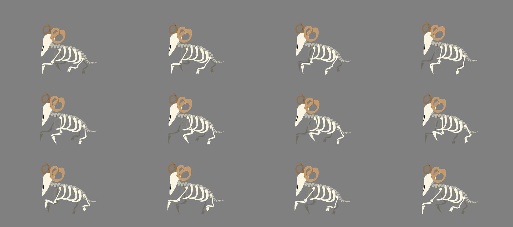
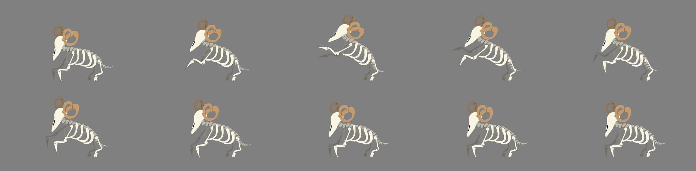
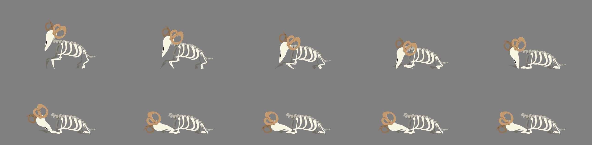
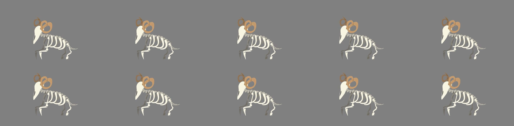

Bone Beasts
These terrible creatures tower above the diminutive Bai, serving the will of Bai’s
brother.
They
consist of a mismatch of bones and parts from a number of dead beasts.
They have only
one directive – kill Bai.

Bone Beast spritesheets

Run cycle
A Bone Beast may charge at its enemy, catching it off guard

Attack cycle
The Bone Beasts attack with a downward slashing motion from the front legs, which can devestate an unassuming foe

Death cycle
Being made of bone, the Beasts simply collapse into a pile of bones, the controlling spirt within them having been defeated.
